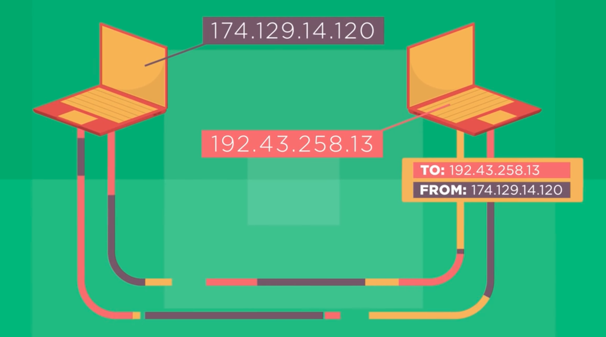

The internet is a network of networks that links billions of devices around the world. The internet is really a design philosophy and architecture expressed in a set of protocols. Protocols are a set of well-known set of rules and standards that if all parties agree to use it will allow them to communicate without trouble. Protocols are used to communicate between machines. The design philosophy of the internet has allowed the internet to adopt and absorb new communication technologies, thanks to the use of protocols. For a new technology to use the internet in some fashion, it just needs to know which protocols to work with.
All different devices on the internet have unique addresses. This includes a computer, a mobile phone, a tablet, or even a smart light bulb. An address on the internet is just a number, it is unique to each device and network. Similar to a mailing system, you do not need to know a person’s name to send them a letter, but you do need their address and the proper format of their address to ensure that they receive the mail you are sending them. The addressing system for the computers on the internet forms part of one of the most important protocols used in internet communication, known as the internet protocol or IP. A computer’s address is known as the Internet Protocol (IP) Address.
Data that is sent around the world through the internet is divided into packets. Each packet has a max size of 65535 bytes and has a header with some technical information. A header will also have a ‘from’ address and a ‘to’ address and the actual data it is transferring. Each header is 60 bytes. The packets are then divided into several parts and move on the Internet to their destination along different paths each taking different times. The packets are then reordered and the received packets are acknowledged back to the sender. The sender then resends any packets that were not acknowledged.
To piece all of this together, let us say that you are visiting a website from your computer. What is
technically happening is that your computer is sending a message to another computer where the website
is hosted. The message header would read “TO:192.43.258.19 FROM:174.129.14.120”. The computer now knows
where the message is coming from and where to send information to. IP addresses carry information about
the computer as well. Traditional IP addresses were made up of 32 bits. Through an IP address, we are
able to determine what network and subnetwork the device is connected through.

This version of IP addressing is called IPv4, and was designed in 1973, and adopted in the 1980s. This version provided more than 4 billion addresses. However, with the growth of the internet, 4 billion unique addresses were not enough. Today the internet is transitioning to a new form of addresses known as IPv6. IPv6 addresses use 128 bits per address and provide the world with 340 undecillion unique addresses.
Now back to packets and routing. Information on the internet is not necessarily transferred on a fixed path. Information on the internet goes from one computer to another in a ‘packet’ of information. The path that this information takes is known as the ‘routing’. Packets have limitations and may not carry all the information at once. Information, data, an image or a song might be made up of millions of bits that are too many to send in one packet. The computer sending the image will break it into many packets and send them to their destination. The packets do not have designated routes, they only carry information of where it is coming from and where it is going to.
Routers on the internet act as packets managers and they keep the packets on the internet moving smoothly. However, they might arrive at the destination at different times and in different orders. Every router keeps track of the routes that the packets are travelling, the more paths that are available, the more fault tolerant the network is. So when a large file is sent from one computer to another, the Transmission Control Protocol will help manage the sending and receiving of the packets that carry this file. When the packets arrive at their destination, the TCP acknowledges the packets received and if all the packets are accounted for then you can access the file that was sent/received. However, if some packets are missing then the TCP will communicate with the sender for the missing packets to ensure that the full file is received and packets are reassembled in order.
The agreed standards and protocols of how data is sent around the internet help systems to connect,
collaborate and communicate with each other seamlessly. TCP, IP and Routers are at work no matter what
you are doing on your computers. Whether listening to a song, streaming your favorite TV show, or
sending an email. DNS servers are communicating with IP addresses, packets are being sent through
routers back and forth, and TCP is managing the packets being sent and received. This is all happening
at the same thanks to the people that made it possible for our computers to speak the same language.